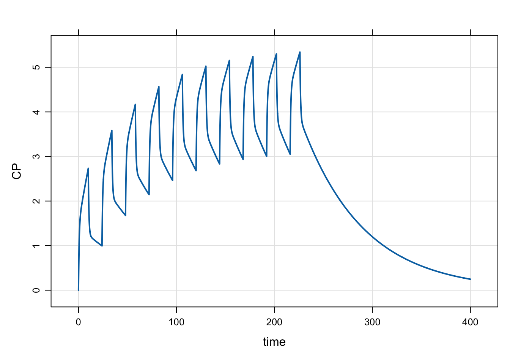

library(mrgsolve)
library(dplyr)
library(ggplot2)
theme_set(theme_bw())
options(mrgsolve.soloc="build")I just discovered this nifty tool published by the folks over at
What I want to focus on for this post is how we can use this package to cross validate mrgsolve output: we’ll simulate with pmxTools and mrgsolve just to see the different workflows and check the output values. If users are interested in other validation tests for mrgsolve, please see the document
1 Setup
library(pmxTools)Loading required package: patchwork
Attaching package: 'pmxTools'The following object is masked from 'package:mrgsolve':
read_nmext2 Two-compartment infusion
2.1 Simulate with pmxTools::pk_curve
You can use this function to generate a PK profile based on super-positioning.
To simulate a 2-compartment model after IV infusion of 100 mg over 10 hours, first define a list of pk parameters, including tinf, the infusion duration
pars <- list(CL = 1, V1 = 4, V2 = 50, Q = 5, tinf=10)Call pk_curve and provide simulation times, dose regimen (including dose, ii, addl), the model parameters, and select the model, in this case it is 2cmt_infusion
calc <- pk_curve(
t = seq(0,400,0.1),
dose = 100,
ii = 24,
addl = 9,
params = pars,
model="2cmt_infusion"
)head(calc) t cp
1 0.0 0.0000000
2 0.1 0.2322016
3 0.2 0.4323273
4 0.3 0.6050735
5 0.4 0.7544486
6 0.5 0.8838735ggplot(data = calc, aes(t,cp)) + geom_line() + theme_bw()Pretty easy!
2.2 Simulate with mrgsolve
We can load the 2-compartment model from our model library, and update the parameter set. We make an event object with the dosing information and simulate:
mod <-
modlib("pk2", delta = 0.1, end = 400) %>%
param(CL = 1, V2 = 4, V3 = 50, Q = 5)Loading model from cache.e <- ev(amt = 100, rate = 10, ii = 24, addl = 9, cmt = 2)
out <- mrgsim_e(mod,e, obsonly=TRUE, recsort=3)plot(out, CP~time)
head(out) ID time EV CENT PERIPH CP
1 1 0.0 0 0.0000000 0.00000000 0.0000000
2 1 0.1 0 0.9288064 0.05929462 0.2322016
3 1 0.2 0 1.7293093 0.22531873 0.4323273
4 1 0.3 0 2.4202941 0.48225334 0.6050735
5 1 0.4 0 3.0177942 0.81659743 0.7544486
6 1 0.5 0 3.5354939 1.21682828 0.88387352.3 Are they the same?
We can check the difference between the values:
summary(out$CP-calc[["cp"]]) Min. 1st Qu. Median Mean 3rd Qu. Max.
-6.839e-14 -1.910e-14 -6.217e-15 1.382e-15 3.020e-14 5.018e-14 3 Oral dosing example
To do a model for first-order absorption
pars <- list(CL = 1, V = 20, ka = 1.2)
calc <- pk_curve(
t = seq(0,400,0.1),
dose = 100,
ii = 24,
addl = 9,
params = pars,
model = "1cmt_oral"
)
ggplot(calc, aes(t,cp)) + geom_line() + theme_bw()mod <- modlib("pk1", param = list(CL=1, V = 20, KA = 1.2), end=400, delta=0.1)Loading model from cache.out <- mrgsim_e(
mod,
mutate(e, rate = 0, cmt = 1),
recsort = 3,
obsonly = TRUE
)plot(out, CP~time)
summary(out$CP-calc[["cp"]]) Min. 1st Qu. Median Mean 3rd Qu. Max.
-5.596e-14 -3.197e-14 -1.954e-14 -1.729e-14 -4.302e-16 9.104e-14 4 Caution
Please note that we used some specific options to get the results exactly comparable. It really does take a lot of care to ensure that the setup is exactly the same for both tools when doing comparisons like this. If you start benchmarking and the results don’t come out the same, please go back and double check your setup to make sure you haven’t made any assumptions about how each tool works.
5 Building our community
As I noted earlier, the goal of this post wasn’t to go head-to-head with pmxTools. Rather, I wanted to show how the mrgsolve project can take advantage of this great tool to help our development and validate what we’re doing. I can only hope that others also find mrgsolve as useful for their project, validation or other type of simulation work that needs to get done. This sort of synergy between development projects is only possible with an open-source community dedicated to open and public development projects and sharing of knowledge and tools. The more we do this in our pharmacometrics community, the more progress we’ll all make and our science will advance. And we will have done it together.